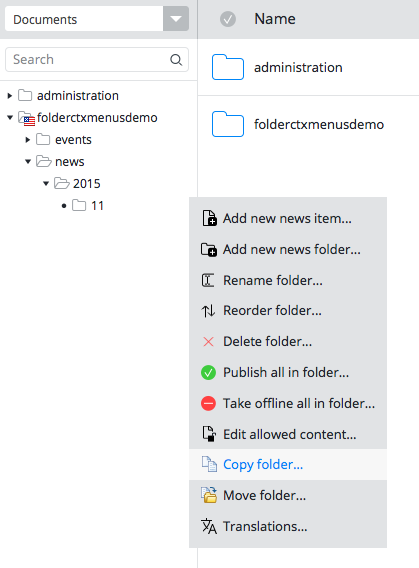
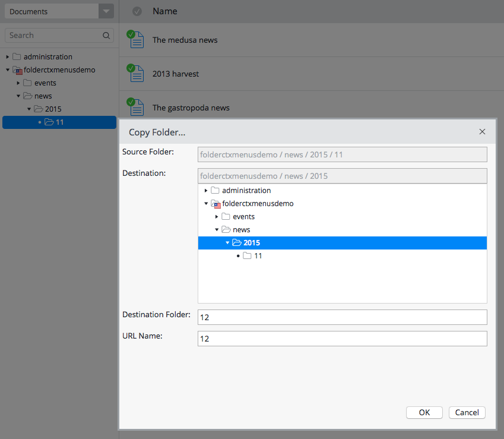
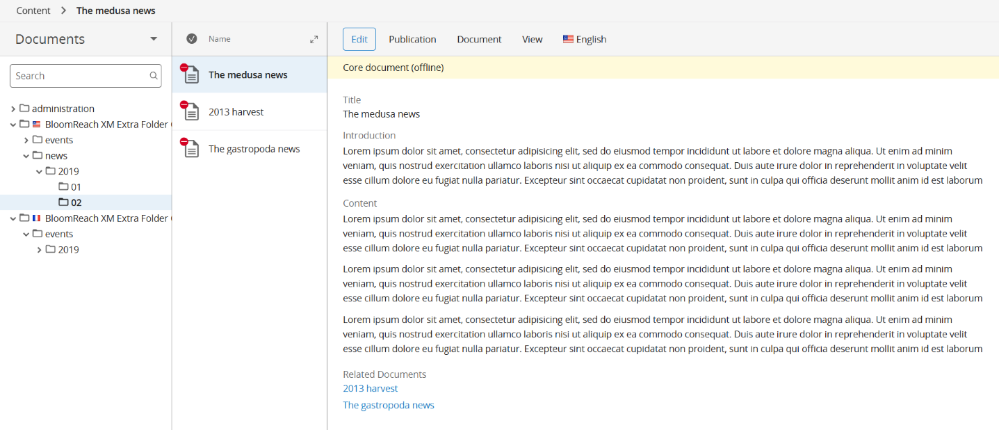
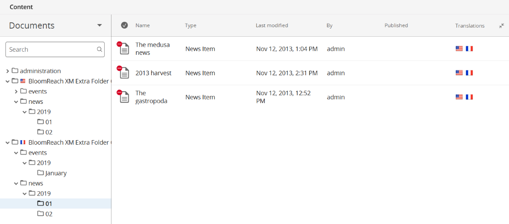
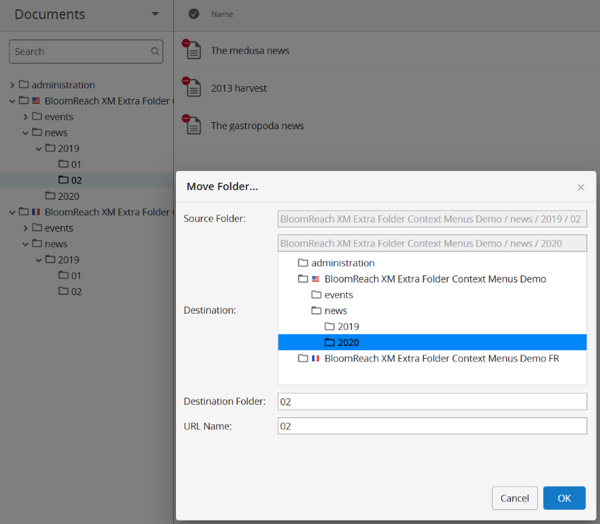
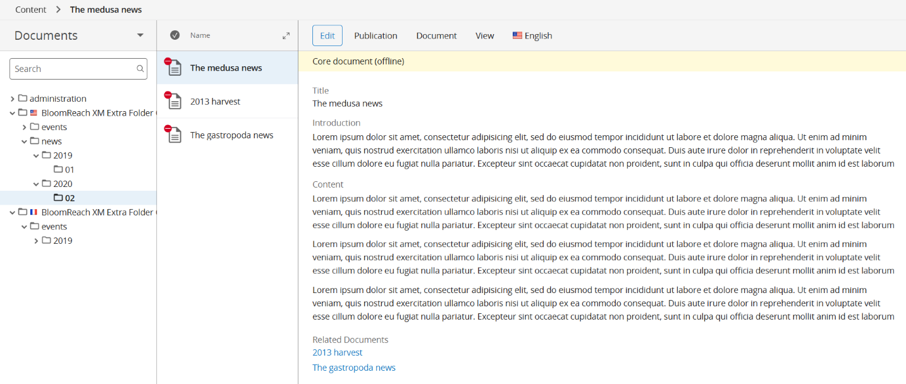

Bloomreach XM Extra Folder Context Menus
This project provides extra Folder Context Menu items such as 'Copy folder...' and 'Move folder...' for Bloomreach XM with extensible base implementations for developers.
The best way to explain this feature is probably to show screenshots. After installing this plugin, you will be able to see 'Copy folder...' and 'Move folder...' context menus.
Copying folders
In the Folder Copy dialog, you can select the destination folder, folder name and folder URL name.
Please try to click on the "See Also" links field to open the linked documents. The document links are automatically reset to the corresponding copied documents under the same copied root folder if the linked document was under the same root folder.
Copying and translating folders
When copying translated folders, there is the option of linking the copied folders and documents as translations.
This makes sense when copying between root folders that have different locales but are translations of each other.
The default value for this option can be configured with default.linkTranslation: true (false by default)
on the folder configurations in /hippo:configuration/hippo:workflows/threepane/.
As you can see from the flags, the documents have been linked.
Moving folders
In the Folder Move dialog, you can select the destination folder, folder name and folder URL name.
Please try to click on the "See Also" links field to open the linked documents. In this case, the document links are not affected by moving the folder because all the internal document lnks are based on node identifiers (UUIDs).
Programmatic Folder Copy and Move
It is also possible to use the library in programmatic way (e.g, in Java code or Groovy script) to copy or move a folder. In that case, refer to the Installing Only the Common module of Bloomreach XM Extra Folder Context Menus Plugin section.
For folder copy, see the following Java code example:
import org.onehippo.forge.folderctxmenus.common.FolderCopyTask;
Session jcrSession = ...; // you get session somehow, depending on context.
try {
String sourceFolderPath = "/content/documents/myhippoproject/news";
String targetFolderPath = "/content/documents/myhippoproject";
String destFolderNodeName = "news2";
String destFolderDisplayName = "News 2";
Boolean resetTranslations = true;
Node sourceFolderNode = jcrSession.getNode(sourceFolderPath);
Node targetFolderNode = jcrSession.getNode(targetFolderPath);
FolderCopyTask task =
new FolderCopyTask(jcrSession, Locale.ENGLISH,
sourceFolderNode, targetFolderNode,
destFolderNodeName, destFolderDisplayName,
resetTranslations);
// copy /content/documents/myhippoproject/news to
// /content/documents/myhippoproject/news2
task.execute();
jcrSession.save();
} finally {
jcrSession.refresh(false);
}
For folder move, see the following Java code example:
import org.onehippo.forge.folderctxmenus.common.FolderMoveTask;
Session jcrSession = ...; // you get session somehow, depending on context.
try {
String sourceFolderPath = "/content/documents/myhippoproject/news/2011";
String targetFolderPath = "/content/documents/myhippoproject/common";
String destFolderNodeName = "2011";
String destFolderDisplayName = "2011";
Node sourceFolderNode = jcrSession.getNode(sourceFolderPath);
Node targetFolderNode = jcrSession.getNode(targetFolderPath);
FolderMoveTask task =
new FolderMoveTask(jcrSession, Locale.ENGLISH,
sourceFolderNode, targetFolderNode,
destFolderNodeName, destFolderDisplayName);
// move /content/documents/myhippoproject/news/2011 to
// /content/documents/myhippoproject/common/2011
task.execute();
jcrSession.save();
} finally {
jcrSession.refresh(false);
}
Demo Application
Fork me on GitHub: https://github.com/bloomreach-forge/folder-context-menus.
Build the project using Maven:
$ mvn install
And, build and run the demo in the demo subfolder.
$ cd demo
$ mvn clean package
$ mvn -P cargo.run
Visit http://localhost:8080/cms/.